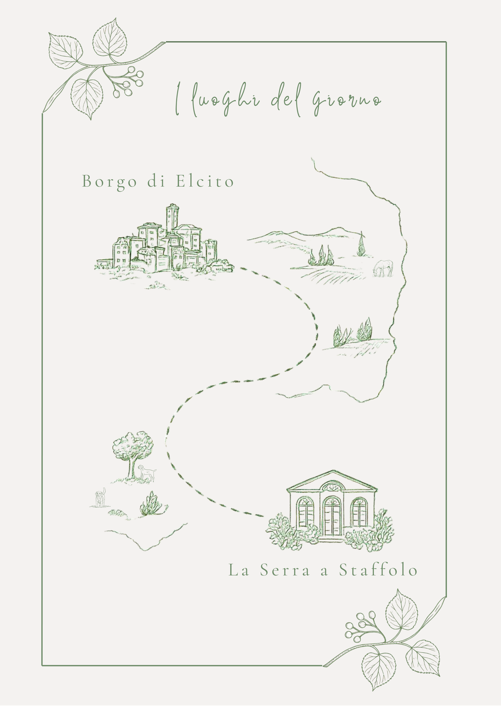

Ginevra e Riccardo annunciano il matrimonio dei loro genitori
Ludovica & DarioSabato 11 Luglio
Ore 16:30 | Borgo di Elcito
Ci scambieremo le promesse nella cornice di Elcito con una cerimonia simbolica che celebrerà la nostra unione.
Il Giorno del Matrimonio
16:30 – Cerimonia presso il Borgo di Elcito
18:30 – Aperitivo e Ricevimento presso "La Serra" (Staffolo)

Il Weekend
Per chi ha voglia di trasformare il nostro matrimonio in una piccola vacanza, abbiamo pensato a qualche momento extra da passare insieme, con dettagli ancora da definire.
Aperitivo della Sposa & Aperitivo dello Sposo
Pranzo conviviale presso il Monte San Vicino
A seguire, per chi lo desidera, possibilità di una passeggiata a cavallo.
Dove Dormire
Un sogno da costruire
Stiamo mettendo le basi per il nostro progetto futuro, ristrutturando un antico casale tra le colline marchigiane: è lì che sogniamo di trascorrere il tempo più bello della nostra vita insieme ai nostri figli e ai nostri cani.

- Un albero di arancio o di ulivo
- Un mattone per il grande camino
- Una luce in giardino
- Un metro quadro di cotto o pietra
RSVP
Amiamo i vostri piccoli, ma per ragioni di logistica e capienza della struttura non riusciamo a garantire spazi e attività per loro. Speriamo che possiate godervi questa giornata di festa "tra grandi" insieme a noi.
Confermate entro il 30 Maggio.
Dario: 342 0492495
Ludovica: 349 0651539